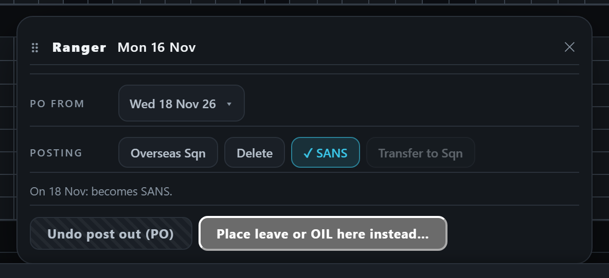
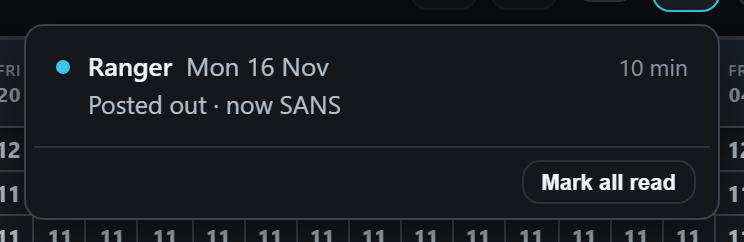
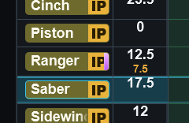
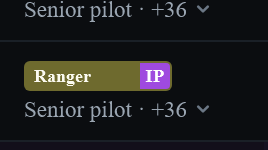
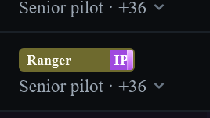
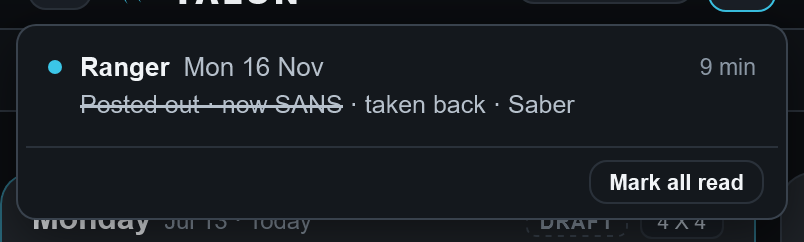
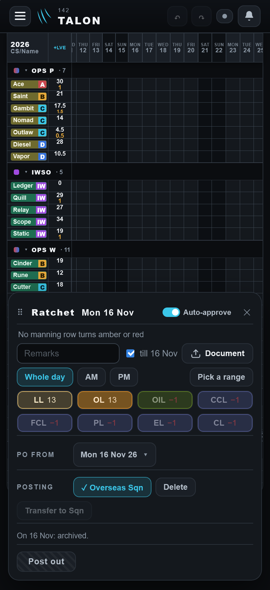
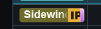

Taken-back posting lines and the SANS line: your look
- Q4: a posting changed after it ran keeps its old bell line. Recommended: take it back, as Undo does.
- Q2: Balances and Approvals show the purple line only from his date. Recommended: keep it as built.
- Your look at the preview, on your iPhone: the preview link.
Q4: A posting changed after it ran
Ranger's SANS posting ran on Mon 16 Nov, and the bell said "Posted out · now SANS". On the 17th Saber moves Ranger's date to the 18th (or picks another outcome). The sheet now says Ranger becomes SANS on the 18th, so he is not SANS today, but every admin's bell still says "Posted out · now SANS". The bell is wrong until the new date. This was there before this build.
Recommended: treat it like Undo post out. The old line is struck through and marked "taken back · Saber". On the new date a fresh "Posted out" line comes.


Q2: Where the purple line shows before his date
On the Leave War grid, a man posted out as SANS wears the purple line from the moment the posting is set (D1697). Balances and Approvals draw the schedule's own name badge, which shows the line only once he actually is SANS, that is, from his date.
Recommended: keep it as built. Before his date he is not SANS yet, and those pages show what is true today.



Built and checked



Note only, no answer needed: an "off the manpower" posting undone more than 14 days after its date gets no "taken back" line. Its line had already left the bell after 14 days, as you ruled (D1696), so there is nothing to take back.